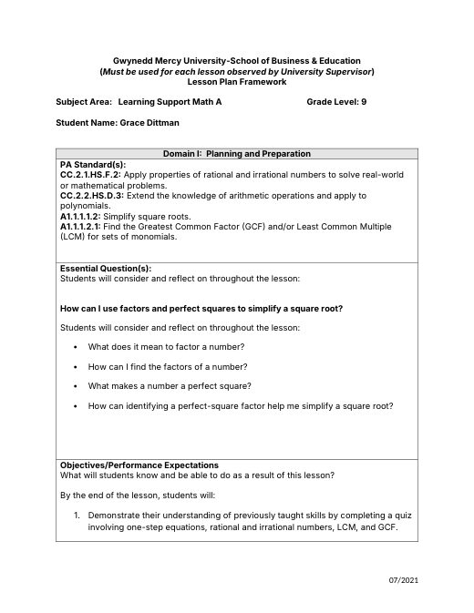
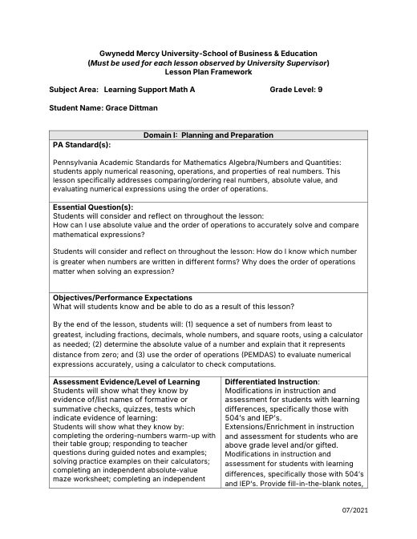

Grace Dittman
Student Teaching Portfolio
Block 2 Math
Block 3 Math
ESS
General Information
Lesson Plans
Student Teaching Journal
Résumé
Search
Home
›
Lesson Plans
›
B3 Learning Support Math
B3 Learning Support Math
Asynchronous Day Plan (PSAT day, all three classes)
Async Lesson Plans 10-22.docx

Factors, Perfect Squares & Simplifying Radicals
B3_9-14_15LessonPlan.docx

Ordering Numbers, Absolute Value & Order of Operations
B3_9-16_17LessonPlan.docx
Evaluating Expressions with Substitution
B3_9-18_22LessonPlans.pdf
Evaluating Expressions & Absolute Value
B3_9-23_24LessonPlan.docx
Radicals, Rational & Irrational Numbers, Test Review
B3_9-25_28LessonPlan.docx
Unit 1 Review & Test
B3_9-29_30LessonPlan.docx
One- & Two-Step Equations
B3_10-1_2LessonPlan.docx
Two-Step Equations in Small Groups
B3_10-5_6LessonPlan.docx
Combining Like Terms
B3_10-7_8LessonPlan.docx
Like Terms: UNO & Practice
B3_10-9_13LessonPlan.docx
Combining Like Terms: Maze & Review
B3_10-14_15LessonPlan.docx
Quiz & Intro to the Distributive Property
B3_10-16_19LessonPlan.docx
Distributive Property & Substitution
B3_10-20_21LessonPlan.docx
Distributive Property & Variables on Both Sides
B3_10-23_26LessonPlan.docx
Variables on Both Sides & Multistep Equations
B3_10-27_28LessonPlan.docx
Multistep Equations Color-by-Number
B3_10-29_30LessonPlan.docx